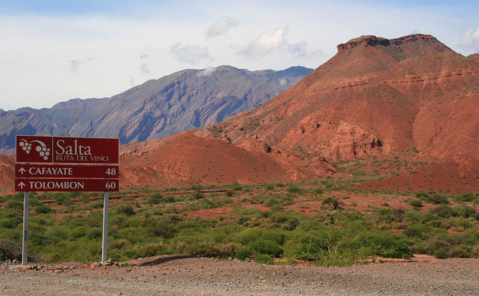

Cafayate
Cafayate es una localidad de los valles Calchaquíes situada en el sudoeste de la provincia de Salta, región noroeste de Argentina. Es cabecera del departamento de Cafayate y reconocida por la calidad de los vinos que allí se producen.


Capital: Salta
Con su geografía majestuosa que contempla el desierto y la selva aunados por valles y quebradas, la provincia fue baluarte histórico de la independencia argentina.
A pesar de situarse en una zona tropical, su clima es cálido aunque con variaciones bastante marcadas, en función de la multiplicidad de su relieve. En el Este predomina el clima semiárido con estación seca; el Altiplano se caracteriza por bruscas oscilaciones térmicas y escasas precipitaciones; valles, quebradas y sierras cuentan con un clima más benigno.
Cafayate es una localidad de los valles Calchaquíes situada en el sudoeste de la provincia de Salta, región noroeste de Argentina. Es cabecera del departamento de Cafayate y reconocida por la calidad de los vinos que allí se producen.
Iruya es un pueblo de la provincia de Salta (Argentina) cabecera del departamento Iruya. Está ubicado a 2780 msnm, sobre los faldeos orientales de la sierra de Santa Victoria, a 307 km de la capital salteña. Está dentro del perímetro de la reserva de biosfera de las Yungas. Al llegar a Iruya, la primera impresión es de un pueblo «colgado en la montaña», o más bien de una isla, ya que está rodeado por los ríos Milmahuasi y Colanzulí -o Iruya-. Se destaca su edificación colonial con callejuelas estrechas y sus paisajes de imponentes vistas panorámicas. En sus proximidades, 5 km al noreste, se encuentran las ruinas del Pucara de Titiconte.